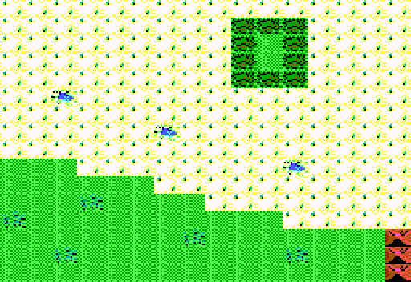

Area E3
| X | Y | Event |
| 0 | 3 | Yellow Message 8 |
| 10 | 12 | A cool sparkling pool. Bathe(y/n)? if you have not given a cupie doll to the gut in D3(7,3) acid melts everything in your backpack |
| 2 | 10 | A small oasis. You find 40 food. |
| 5 | 6 | Serpent King |
| 6 | 8 | A small oasis. You find 40 food. |
| 7 | 2 | Yellow Message 1 |